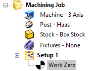
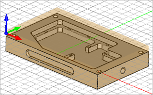

To setup a part for machining perform the following basic steps. These are similar for all types of parts.
1.Check and know the part units (Inches/Millimeters). Only these two units are supported in CAM.
2.Check the orientation of the part to make sure it can be machined. By default the Z axis is the machining direction. Typically the X axis points toward the right or along the bed of the CNC machine. The Y axis typically points to the back of the CNC machine.
3.See How to Orient a Part for Machining for a quick way to orient the part.
4.Select the Program tab.
|

5. Set the Machine definition to either 3, 4 or 5 axis depending on your machine tool and part requirements.
Set the Machine definition to either 3, 4 or 5 axis depending on your machine tool and part requirements.
6. Set the Post-Processor definition.
Set the Post-Processor definition.
7. Define your stock size and material.
Define your stock size and material.
8. Align the Stock with the Part if needed.
Align the Stock with the Part if needed.
9. By default the program zero will be measured from the WCS (World Coordinate System). You can create an alternate Work Zero location if needed.
By default the program zero will be measured from the WCS (World Coordinate System). You can create an alternate Work Zero location if needed.
  |